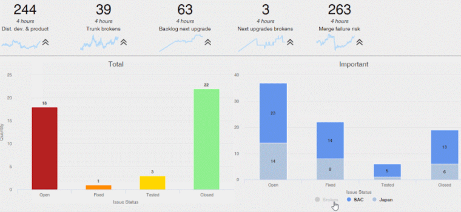

When creating enterprise applications, it is always needed to have the best reports in order to make the best decisions. To accomplish that, GeneXus provides us with a variety of possible solutions.
When the developer needs to define small reports, like invoices or daily reports, this is the easiest way to do it. By creating a Procedure object with visual output, the developer can define a PDF Report.
Even though in each procedure the developer defines all the logic and the layout that makes up that report, the developer can decide to 'turn-on' the Customizable Layout property to allow the end-users to customize the layouts by using a simple tool. (Learn more about this possibility).
This is the type of report to use when we need to group the information by some specific characteristic, to get some visual perspective. Using the Query object and the QueryViewer control we can create more dynamic and visual reports, which allows us to directly manipulate the reports, leading us to a better comprehension of the information. For instance, if we are trying to make decisions about our sales department we will need to have the information in some visual way that we can make the best choice for our company.
Dashboards provide at-a-glance views of KPIs (key performance indicators) relevant to a particular objective or business process. Often, the "dashboard" is displayed on a web page that is linked to a database which allows the report to be regularly updated. More information at Dashboard object

Increasingly over time users, who may not have programming skills, need to gain access to the business data on our company. GXquery 4.0, the GeneXus reporting tool, allows us to view and analyze our business data with a practical “drag & drop” system of filters and variables with which we will be able to obtain the data we need in order to make our best decisions. For more information see http://www.gxquery.com.